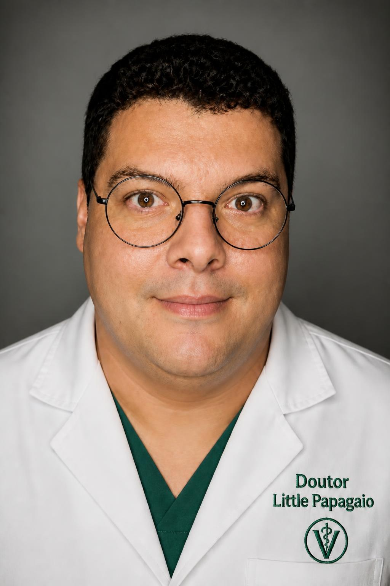

Dra. Coqueirak
Médico veterinário
Responsável pelas consultas e pelo acompanhamento clínico dos animais.
Profissionais preparados
Conheça alguns dos profissionais responsáveis pelos cuidados dos nossos pacientes.
Médico veterinário
Responsável pelas consultas e pelo acompanhamento clínico dos animais.

Cirurgião veterinário
Atua em cirurgias e procedimentos veterinários de pequeno e médio porte.
Especialista em felinos
Cuida da saúde e do bem-estar de gatos e outros pequenos animais.
Nossa equipe está pronta para atender seu pet.
Solicitar atendimento